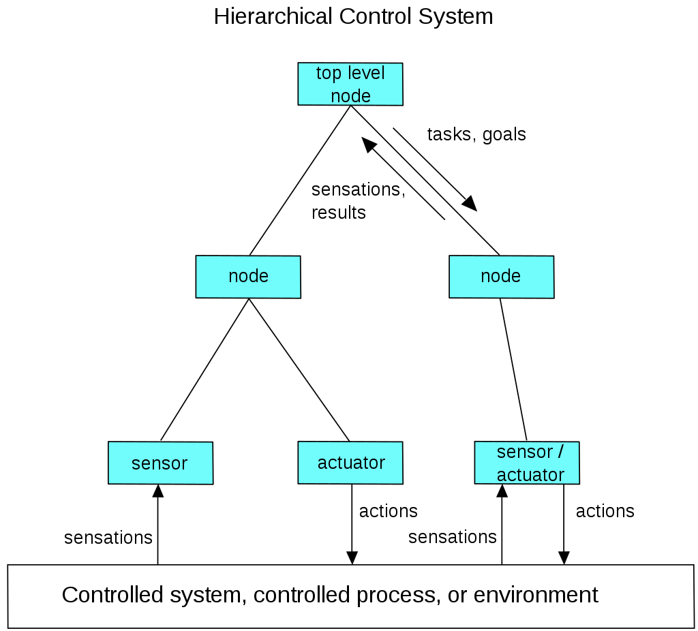
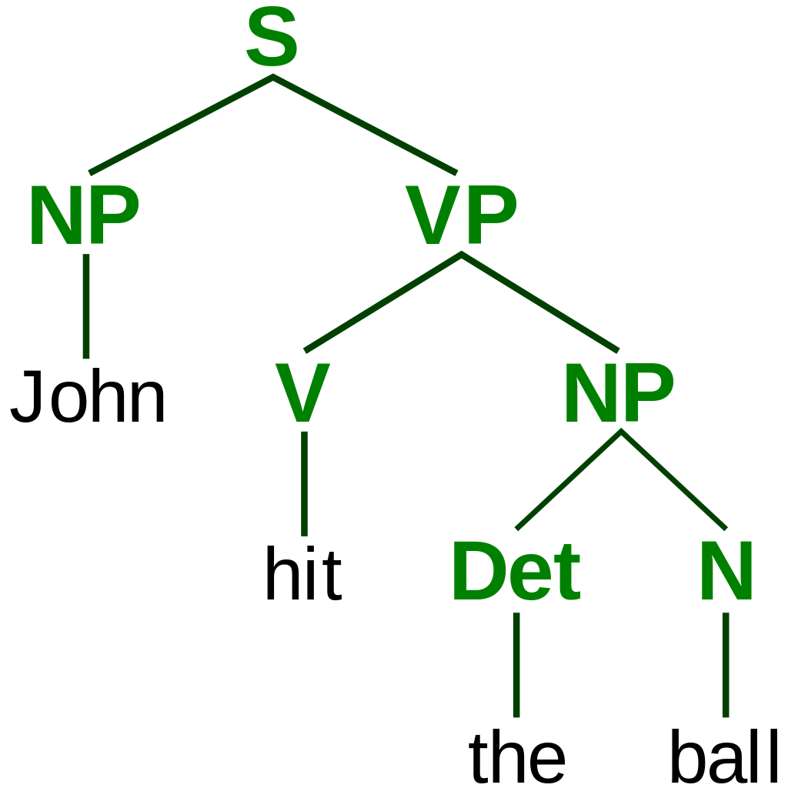

Reasoning, problem solving
Early researchers developed algorithms that imitated step-by-step reasoning that humans use when they solve puzzles or make logical deductions. By the late 1980s and 1990s, AI research had developed methods for dealing with uncertain or incomplete information, employing concepts from probability and economics. These algorithms proved to be insufficient for solving large reasoning problems because they experienced a "combinatorial explosion": they became exponentially slower as the problems grew larger.Even humans rarely use the step-by-step deduction that early AI research could model. They solve most of their problems using fast, intuitive judgments.

A self-driving car system may use a neural network to determine which parts of the picture seem to match previous training images of pedestrians, and then model those areas as slow-moving but somewhat unpredictable rectangular prisms that must be avoided.
Knowledge representation
Knowledge representation and knowledge engineering are central to classical AI research. Some "expert systems" attempt to gather explicit knowledge possessed by experts in some narrow domain.
In addition, some projects attempt to gather the "commonsense knowledge" known to the average person into a database containing extensive knowledge about the world. Among the things a comprehensive commonsense knowledge base would contain are:
objects, properties, categories and relations between objects; situations, events, states and time; causes and effects; knowledge about knowledge (what we know about what other people know); and many other, less well researched domains.
A representation of "what exists" is an ontology: the set of objects, relations, concepts, and properties formally described so that software agents can interpret them. The semantics of these are captured as description logic concepts, roles,
and individuals, and typically implemented as classes, properties, and individuals in the Web Ontology Language.The most general ontologies are called upper ontologies, which attempt to provide a foundation for all other knowledge by acting,
as mediators between domain ontologies that cover specific knowledge about a particular knowledge domain (field of interest or area of concern). Such formal knowledge representations can be used in content-based indexing and retrieval, scene interpretation,
clinical decision support, knowledge discovery (mining "interesting" and actionable inferences from large databases), and other areas.
Among the most difficult problems in knowledge representation are:
Default reasoning and the qualification problem
Breadth of commonsense knowledge
Subsymbolic form of some commonsense knowledge
Many of the things people know
take the form of "working assumptions".
For example, if a bird comes up
in conversation, people typically picture a fist-sized animal that sings and flies.
None of these things are true
about all birds. John McCarthy
identified this problem in 1969
as the qualification problem:
for any commonsense rule that
AI researchers care to represent,
there tend to be a huge number of exceptions.
Almost nothing is simply true
or false in the way that abstract logic requires.
AI research has explored a
number of solutions to this problem.
The number of atomic facts that the average person knows is very large.
Research projects that attempt to build a complete knowledge base of commonsense knowledge
(e.g., Cyc) require enormous amounts of laborious ontological engineering—they must be built,
by hand, one complicated concept at a time.
Much of what people know is not represented as "facts" or "statements" that they could express verbally.
For example, a chess master will avoid a particular chess position because it "feels too exposed"
or an art critic can take one look at a statue and realize that it is a fake.
These are non-conscious and sub-symbolic intuitions or tendencies in the human brain.
Knowledge like this informs, supports and provides a context for symbolic, conscious knowledge.
As with the related problem of sub-symbolic reasoning, it is hoped that situated AI,
computational intelligence, or statistical AI will provide ways to represent this knowledge.

An ontology represents knowledge as a set of concepts within a domain and the relationships between those concepts.
Planning
Intelligent agents must be able to set goals and achieve them. They need a way to visualize the future—a representation of the state of the world and be able to make predictions about how their actions will change it—and be able to make choices that maximize the utility (or "value") of available choices. In classical planning problems, the agent can assume that it is the only system acting in the world, allowing the agent to be certain of the consequences of its actions. However, if the agent is not the only actor, then it requires that the agent can reason under uncertainty. This calls for an agent that can not only assess its environment and make predictions but also evaluate its predictions and adapt based on its assessment. Multi-agent planning uses the cooperation and competition of many agents to achieve a given goal. Emergent behavior such as this is used by evolutionary algorithms and swarm intelligence.
A hierarchical control system is a form of control system in which a set of devices and governing software is arranged in a hierarchy.
Machine Learning
Machine learning (ML), a fundamental concept of AI research since the field's inception,[d] is the study of computer algorithms that improve automatically through experience. Unsupervised learning is the ability to find patterns in a stream of input, without requiring a human to label the inputs first. Supervised learning includes both classification and numerical regression, which requires a human to label the input data first. Classification is used to determine what category something belongs in, and occurs after a program sees a number of examples of things from several categories. Regression is the attempt to produce a function that describes the relationship between inputs and outputs and predicts how the outputs should change as the inputs change.Both classifiers and regression learners can be viewed as "function approximators" trying to learn an unknown (possibly implicit) function; for example, a spam classifier can be viewed as learning a function that maps from the text of an email to one of two categories, "spam" or "not spam". Computational learning theory can assess learners by computational complexity, by sample complexity (how much data is required), or by other notions of optimization. In reinforcement learning the agent is rewarded for good responses and punished for bad ones. The agent uses this sequence of rewards and punishments to form a strategy for operating in its problem space.
For this project the AI had to find the typical patterns in the colors and brushstrokes of Renaissance painter Raphael. The portrait shows the face of the actress Ornella Muti, "painted" by AI in the style of Raphael.
Natural language processing
Natural language processing (NLP) allows machines to read and understand human language. A sufficiently powerful natural language processing system would enable natural-language user interfaces and the acquisition of knowledge directly from human-written sources, such as newswire texts. Some straightforward applications of natural language processing include information retrieval, text mining, question answering and machine translation. Many current approaches use word co-occurrence frequencies to construct syntactic representations of text. "Keyword spotting" strategies for search are popular and scalable but dumb; a search query for "dog" might only match documents with the literal word "dog" and miss a document with the word "poodle". "Lexical affinity" strategies use the occurrence of words such as "accident" to assess the sentiment of a document. Modern statistical NLP approaches can combine all these strategies as well as others, and often achieve acceptable accuracy at the page or paragraph level. Beyond semantic NLP, the ultimate goal of "narrative" NLP is to embody a full understanding of commonsense reasoning. By 2019, transformer-based deep learning architectures could generate coherent text.
A parse tree represents the syntactic structure of a sentence according to some formal grammar.